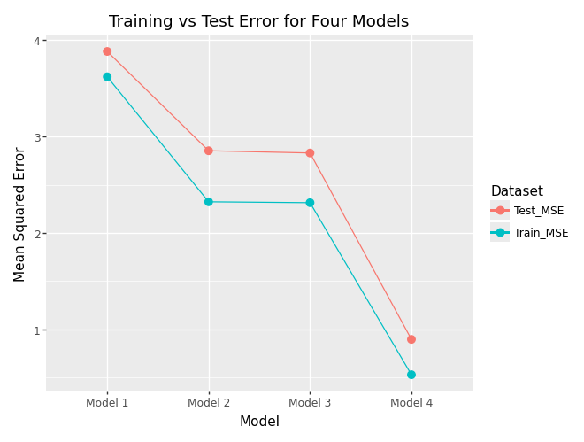

Requirement already satisfied: palmerpenguins in c:\python312\lib\site-packages (0.1.4)
Requirement already satisfied: pandas in c:\users\ivpri\appdata\roaming\python\python312\site-packages (from palmerpenguins) (2.2.3)
Requirement already satisfied: numpy in c:\python312\lib\site-packages (from palmerpenguins) (2.1.3)
Requirement already satisfied: python-dateutil>=2.8.2 in c:\users\ivpri\appdata\local\programs\positron\resources\app\extensions\positron-python\python_files\lib\ipykernel\py3 (from pandas->palmerpenguins) (2.9.0.post0)
Requirement already satisfied: pytz>=2020.1 in c:\python312\lib\site-packages (from pandas->palmerpenguins) (2024.2)
Requirement already satisfied: tzdata>=2022.7 in c:\python312\lib\site-packages (from pandas->palmerpenguins) (2024.1)
Requirement already satisfied: six>=1.5 in c:\users\ivpri\appdata\local\programs\positron\resources\app\extensions\positron-python\python_files\lib\ipykernel\py3 (from python-dateutil>=2.8.2->pandas->palmerpenguins) (1.17.0)
Note: you may need to restart the kernel to use updated packages.
WARNING: Ignoring invalid distribution ~ (C:\Python312\Lib\site-packages)
WARNING: Ignoring invalid distribution ~ip (C:\Python312\Lib\site-packages)
WARNING: Ignoring invalid distribution ~~p (C:\Python312\Lib\site-packages)
WARNING: Ignoring invalid distribution ~ (C:\Python312\Lib\site-packages)
WARNING: Ignoring invalid distribution ~ip (C:\Python312\Lib\site-packages)
WARNING: Ignoring invalid distribution ~~p (C:\Python312\Lib\site-packages)
WARNING: Ignoring invalid distribution ~ (C:\Python312\Lib\site-packages)
WARNING: Ignoring invalid distribution ~ip (C:\Python312\Lib\site-packages)
WARNING: Ignoring invalid distribution ~~p (C:\Python312\Lib\site-packages)
[notice] A new release of pip is available: 25.0 -> 25.3
[notice] To update, run: python.exe -m pip install --upgrade pip
Requirement already satisfied: scikit-learn in c:\python312\lib\site-packages (1.7.2)
Requirement already satisfied: numpy>=1.22.0 in c:\python312\lib\site-packages (from scikit-learn) (2.1.3)
Requirement already satisfied: scipy>=1.8.0 in c:\python312\lib\site-packages (from scikit-learn) (1.15.1)
Requirement already satisfied: joblib>=1.2.0 in c:\python312\lib\site-packages (from scikit-learn) (1.5.2)
Requirement already satisfied: threadpoolctl>=3.1.0 in c:\python312\lib\site-packages (from scikit-learn) (3.6.0)
Note: you may need to restart the kernel to use updated packages.
WARNING: Ignoring invalid distribution ~ (C:\Python312\Lib\site-packages)
WARNING: Ignoring invalid distribution ~ip (C:\Python312\Lib\site-packages)
WARNING: Ignoring invalid distribution ~~p (C:\Python312\Lib\site-packages)
WARNING: Ignoring invalid distribution ~ (C:\Python312\Lib\site-packages)
WARNING: Ignoring invalid distribution ~ip (C:\Python312\Lib\site-packages)
WARNING: Ignoring invalid distribution ~~p (C:\Python312\Lib\site-packages)
WARNING: Ignoring invalid distribution ~ (C:\Python312\Lib\site-packages)
WARNING: Ignoring invalid distribution ~ip (C:\Python312\Lib\site-packages)
WARNING: Ignoring invalid distribution ~~p (C:\Python312\Lib\site-packages)
[notice] A new release of pip is available: 25.0 -> 25.3
[notice] To update, run: python.exe -m pip install --upgrade pip
C:\Python312\Lib\site-packages\palmerpenguins\penguins.py:2: UserWarning: pkg_resources is deprecated as an API. See https://setuptools.pypa.io/en/latest/pkg_resources.html. The pkg_resources package is slated for removal as early as 2025-11-30. Refrain from using this package or pin to Setuptools<81.
Let’s use the other variables to predict bill_depth_mm. Prepare your data and fit the following models on a training dataset subset of the entire dataset:
Four different models, each containing a different set of predictor variables
Create a plot like the right plot of Fig 1. in our Model Validation chapter with the training and test error plotted for each of your four models.
Which of your models was best?
# Code Hereerrors_long = errors.melt(id_vars="Model", value_vars=["Train_MSE", "Test_MSE"], var_name="Dataset", value_name="MSE")(ggplot(errors_long, aes(x="Model", y="MSE", color="Dataset", group="Dataset"))+ geom_point(size=3)+ geom_line()+ labs( title="Training vs Test Error for Four Models", x="Model", y="Mean Squared Error"))

it looks like the best performing model was Model 4, since it has the least MSE. This means that including more predictors improves bias, and the model is able to learn this connection and generalize well during training.